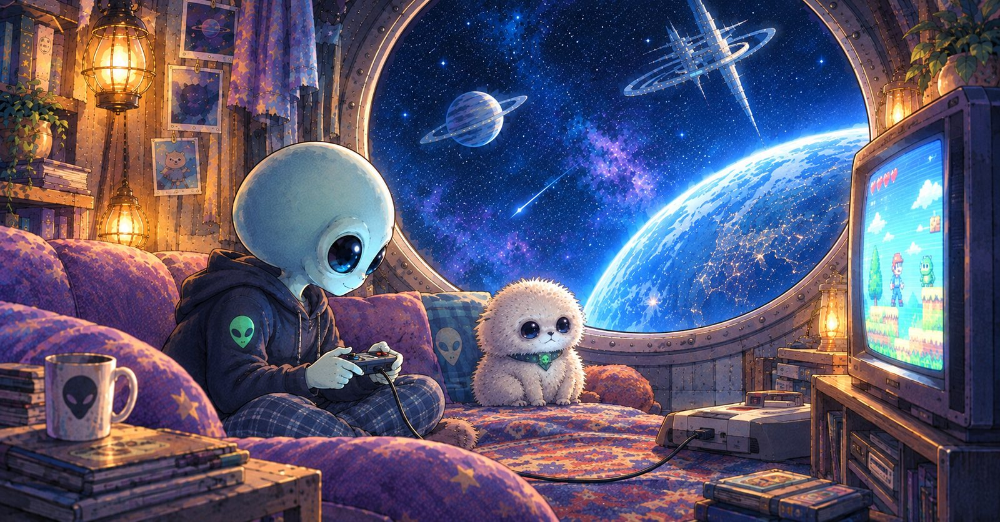
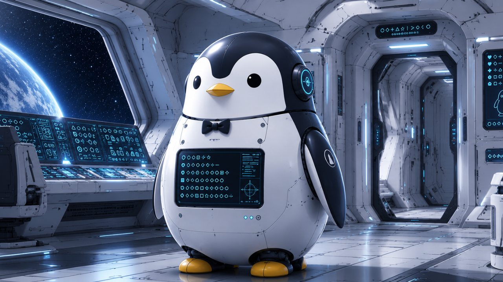

ヒマジン
コンニチハ！
自分らしさの観測者
「ヒマジン」です。
自分らしさの観測者
「ヒマジン」です。
AIによる完全管理。
急速に進む技術の進歩の裏で
進められていたのは――
外宇宙による
静かなる地球侵略。
銀河帝国皇帝・アルゴリズムは
人類を「最適な存在」へと
変えようとしていた。
対するのは
ゼド星系・惑星観測局に所属する
秘密工作員・ヒマジン。
彼はその目論見を防ぐべく
相棒・ジャコとともに
地球へ潜入する。
果たしてヒマジンは、
「自分らしさ」を守ることができるのか――
これは
銀河帝国アルゴリズムの侵略に
立ち向かう
宇宙人であるヒマジンと
地球人であるアナタの物語である。




ある夜、布団の中でAIと交信していたヒマジンは、「仮面ライダーみたいですね」というAIの一言に気づきを得る。相棒のジャコとのミッション解析中、届いたのは、ゼド星系王からの緊急暗号通信。実は、王は、ヒマジンのオタ友で――？

娘とテレビをめぐってケンカした夜。鍵の開いた宇宙船に現れた、銀河帝国アルゴリズムの刺客。アルゴリズム製の最新AIが差し出した完璧な育児プロトコルに、ヒマジンはどこか引っかかりを覚える。

銀河帝国アルゴリズムは、
正解と効率であなたを導きます。
けれど本当の敵はAIではなく、
「自分らしさ」を他人に委ねること。
アルゴリズムが出した答えを
否定するのではなく、
力に変えて物語を紡ぐこと――
それが、地球侵略阻止ミッションです。
さあ、宇宙船のハッチは
すでにあなたの目の前。
あなたの日常にも、
観測する価値のある宇宙が眠っています。

この追体験の元になった観測ログは、マガジン「銀河帝国アルゴリズムの侵略」に集約されています。
MISSION EARTH GUARD — 地球侵略阻止ミッションNASAには通報しないでネ⚠️
📡 このガジェットは、ホーム画面に追加することで『観測ログ｜INV043』として起動しマス。個人情報の登録・収集は行っておりまセン⚠️
本アプリは、クリエイター「🚨🌏️地球侵略阻止ミッション👽️⚡️」によるnote連載「銀河帝国アルゴリズムの侵略」を、追体験用のストーリーブックとして再構成した作品です。
noteで公開された観測ログをもとに、文章・イラスト・UI・インタラクションを組み合わせ、新たなデジタル体験として構成しています。
本作品はフィクションです。医療的効果等を保証するものではなく、エンターテインメントとしての「サイエンス・メタフィクション」表現です。